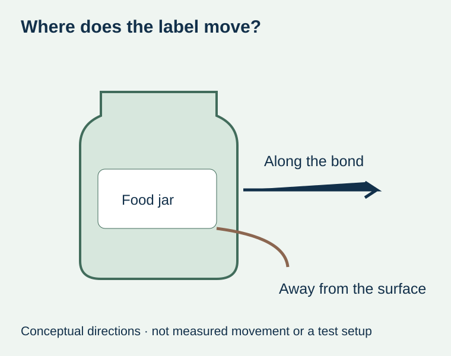
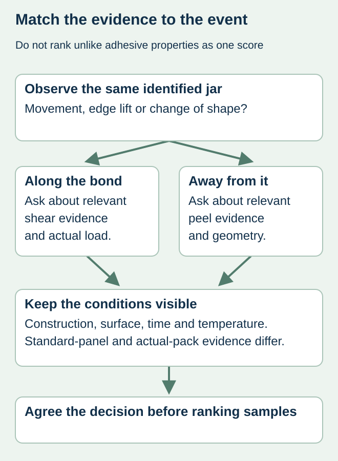

A condiment-jar label is difficult to peel away, yet its position changes after a handling step. The purchasing team asks for a “stronger glue” based on the peel figure. That request skips the distinction between resisting removal away from a surface and resisting movement along it.
Record whether the label moves along the jar, lifts from it or changes shape, then identify the real load and conditions. A sliding observation does not establish its cause. A higher peel figure alone does not show that the proposed construction will resist that different event.


Different test names describe different questions
FINAT’s technical-method overview lists resistance to shear from a standard surface separately from peel adhesion and loop tack. That separation matters when requesting evidence. The exact current method, sample, bonded area, load, time and temperature must be identified by the testing party; this article does not reproduce a test method or prescribe a passing value.
Peel evidence describes a particular separation under its stated conditions. Shear evidence addresses a load acting along the bond under defined conditions. Initial tack is another property. Do not compare a time-to-failure figure, force value and qualitative description as though they were one universal adhesive-strength scale.
Describe the package event before selecting a laboratory request
| Observed event | Evidence to preserve | Question for the reviewer |
|---|---|---|
| Position changes | Reference marks or photographs tied to the same jar and interval | Did the whole label move relative to the container? |
| Edge lifts | Location, shape and actual package condition | Is this a separation or geometry problem? |
| Face distorts | Identified construction and visible dimensional change | Did the label change shape rather than slide as a unit? |
| Handling load | Actual contact, time, temperature and process step | Which force or condition might the evidence need to represent? |
| Report | Method, surface, sample identity and complete result basis | Does this report answer the package event? |


Keep comparison samples relevant
For a hypothetical sauce jar, mark an unambiguous feature on the container and retain an identified image of the applied label before the questioned handling step. Compare later observations against that reference without repeatedly repositioning the label. Record when and where the stock moved. The quality owner should determine the appropriate sample handling and release decision.
Ask the supplier which relevant comparisons are available on the actual jar or an explicitly identified test surface. A standard-panel report can support a controlled material comparison, but it does not reproduce every curved package, surface contamination or contact force. Keep the actual food-container surface and proposed complete label construction in the request.
Do not change several inputs and call one of them the cure
If the supplier proposes another adhesive, identify what else changes: face stock, coat system, laminate, application or dwell. Where several elements change, retain those differences instead of assigning the result to adhesive family alone. A photo after one informal trial is not a whole-order performance guarantee.
The dwell guide maps the youngest packs and first handling. It does not supply a universal waiting period that corrects sliding. The peel-report guide helps compare peel evidence when that separate property is relevant.
Agree an acceptance question that matches the problem
Specify the condition the label must withstand and the observations that matter on an identified package. The responsible parties should decide the test and acceptance basis before ranking samples. Keep laboratory results, actual-pack observations and the release scope separate. That gives purchasing a useful decision: which proposal has relevant evidence for this jar and handling sequence, and which uncertainty remains open?
Discuss the unresolved label requirement
Send the actual jar and label references, marked movement observations, application state, time before handling and any identified reports. Ask the responsible supplier which shear or package evidence is relevant. Prepare a label specification inquiry. The contact page opens an email draft and lists email or WhatsApp for attachments. Supply, proof options, testing, pricing and timing require project confirmation.